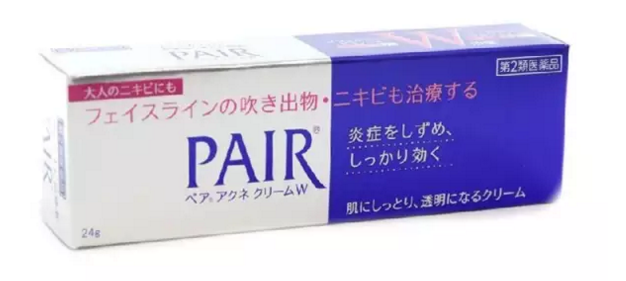
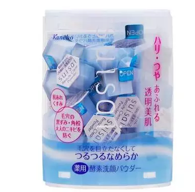
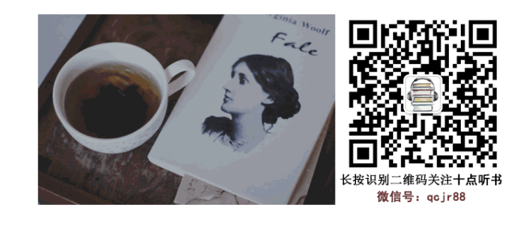

或许第一次看到网站的人，觉得在一个技术类的网站上面，有个好用分享的模块，肯定会显得特别的不协调吧！
但是看到以下这些话，你又作何感想呢！
本文首发自微信公共帐号： 学习学习再学习（xiaolai-xuexi）； 无需授权即可转载，甚至无需保留以上版权声明； 转载时请务必注明作者。
《共同成长社区》的分享，并不是 “私密” 的，我们不在乎分享内容是否流出去，事实上，我们会主动拿出绝大多数的内容分享至社区之外 —— 因为所有的分享，最终传播得越广越有价值。
以上两段话都是摘自李笑来老师的微信公众号，学习学习再学习。这也是我为什么给自己的网站起名叫学习再学习。也希望自己不断的学习成长。只是看到的人很有限，所以利用这样的机会，让更多的人看到这些高质量的文章。
还有一些其他的微信公众号上面的文章也非常的不错。还有一些微信公众号，我也会不断的分享给大家！！！！
下面是微信公众号的二维码，有需要的可以加。
2016-07-14 雅君 雅君的好用分享
解决痘痘、角质、黑头、粉刺、汗味の尴尬 | 夏日大作战
喜欢夏天的热情明朗，生机勃勃。满大街都是穿着吊带短裤人字拖，露背露腰小裙子的姑娘们。每次看到漂亮肉体，少年我都会心动不已。
但也听身边有妹子说，「夏天好烦哦」，遇到闷热天气，皮肤更容易出状况，脸上出黑头、爆痘更频繁了。有的胳膊或大腿起了鸡皮，背部长了痘痘，三伏天还得穿长衣服来遮挡，简直大写杯具。 唔，这期就介绍一些解决问题肌肤的东东Y(^o^)Y
长痘痘了？
LION狮王 PAIR 粉刺暗疮膏 14g
之前我买过资生堂Pimplit去痘膏，但好像没什么效果。抱着试试看的想法入了狮王，感觉对刚长出来的痘痘效果蛮明显的，头一天涂完，两三天就下去了。小小一只，携带方便。用时，点一点在痘痘上就好，不用抹开，质地清爽不黏腻。
小林制药去鸡皮肤去角质软化毛囊膏 30G
之前读者@why 推荐的：「我腿上皮肤角化（俗称鸡皮肤）夏天露腿不自在，也试过很多产品，无果。但是这款一盒用下去立马见效，红点点减退，皮肤光滑很多，已经回购，就是量少。涂两条小腿，每天一次，也就用半个月。」
我有朋友也有鸡皮肤的烦恼，我送了她一罐。她用了一周，反馈说效果还不错
有兴趣的同学可以试试。分享一下雅君的订阅号，想要更多了解的可以扫描
2016-07-13 十点听书
据说人的自信，与漂亮不漂亮，形成正比。漂亮永远是相对的，变化的，甚至神秘莫测。唐朝的美女搁在今天，一定忙不迭地去减肥，而以好莱坞女星为代表的大嘴美女，提起中国传统美女的樱桃小嘴，一定会忍不住开怀大笑。
自信还会与人的文化有关，通常是越有知识越自信，学历越高越自信。水涨了船就高，口袋里钱越多越自信。自信的本义是相信自己，是对自己充满了信心，但是在现实生活中，自信更多的是一种外在的比较，或者说是一种比拼。
自信会让自己觉得很牛，出过国比没出国牛，大都市比小县城牛，城里人比乡下人牛，名牌大学比野鸡大学牛。我认识一个幼儿园小男孩，一头一脸的小帅哥模样，是个天生自大狂，看谁都看不入眼，有一次他的自大理由，竟然是他们班的女生，没有一个像他那样有小鸡鸡。
反过来也一样，人会为同样的原因自卑，为自己的相貌，为钱，为头衔，为学历，为房子大小。因此，既然是活着，千万别和自己过不去，要寻找点快乐，要多想些高兴的事，比上不足比下有余。聪明的人比不上，不与比自己强的人斗气。总有人比你钱更多，总有人比你官更大，要居高临下，自信的箩筐里永远不会有烂梨。
钱钟书先生举过一个大家都熟悉的例子，人们面对一串葡萄的时候，必定会面临两种选择，可以从最小最烂的开始吃，这样将渐入佳境，越来越好。反过来就不一样，结局虽然有点不妙，是越来越糟糕，却最大限度地享受，毕竟每次都是在吃最好的。生活中绝大多数人，喜欢前一种吃法，都习惯把快烂的水果先消灭掉，好日子放后面过，结果就是你可能始终在吃烂葡萄。
不久前，各地朋友聚在一起开会，无意中聊起了房价，七嘴八舌好不热闹。按说房价太贵，怎么都不会好事，偏偏这一桌子糊涂蛋，都为自己诚实昂贵的房价，洋洋得意。谁贵谁牛，谁贵谁摆谱。我自己也陶醉在这个怪圈里，因为当时在场的衮衮诸公，除了来自上海、北京、南京这样的二流城市，似乎也有资格笑傲群雄。我向来不是个自信的人，凭着南京的高房价，居然也自信了一回。同样是省城，武汉和成都的朋友吓得不敢吭声，一位来自合肥的书呆子，非常感慨温州炒饭团为什么没有杀到他们那里去。
房价贵了，也会让人自信，真是吃错了药。现实生活就是这么幽默，这么残酷。一方面，大家希望房价便宜一些，好让自己买得起房子。另一方面，又为房价贵讨个嘴上优势，太贵了，破罐子破摔，索性大家都买不起。自信本来是要相信自己，事实却是不能相信自己。人的自信常常没道理，有时候，仅仅是凭了一点错觉。
这只是分享的其中一篇文章。有需要的，可以关注下面的微信公众号
